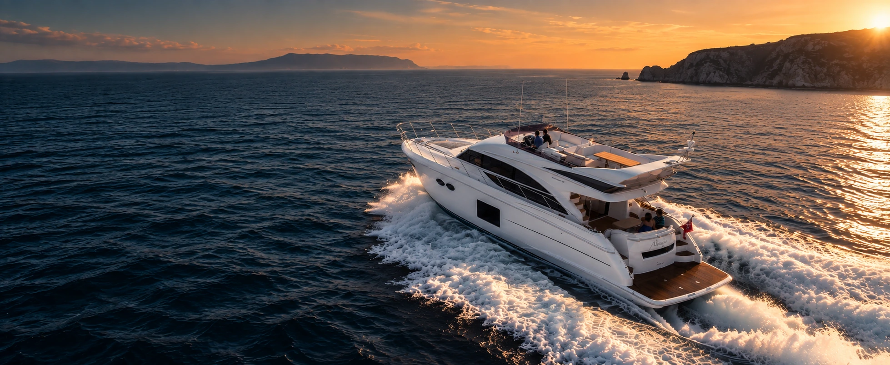

.webp)
Yachts.
Interior refit, bespoke furniture, materials and complete project coordination — designed around the way you want to live on board.
Reimagine
life at sea.
We combine concept design, 3D visualisation, technical development and trusted specialist partners to transform existing yachts without losing what already works.
Discuss your yacht →Interior Refit
Complete or partial transformations of saloons, cabins and social areas.
→Bespoke Furniture
Custom joinery, storage and furniture designed for marine use.
→Upholstery
Leather, fabrics, foam and finishes selected for comfort and durability.
→Lighting
Ambient and functional lighting integrated into the interior concept.
→3D & Technical
Accurate visualisation and development before production begins.
→Project Delivery
Coordination of suppliers, production, installation and final detailing.
→
Princess 56
Interior Refit
A warmer, quieter and more contemporary interior direction for a proven yacht platform.
Talk to us →Keep the yacht.
Change the feeling.
A good refit does not need to erase the boat's identity. We focus on the interventions that create the biggest improvement in comfort, atmosphere and perceived quality.